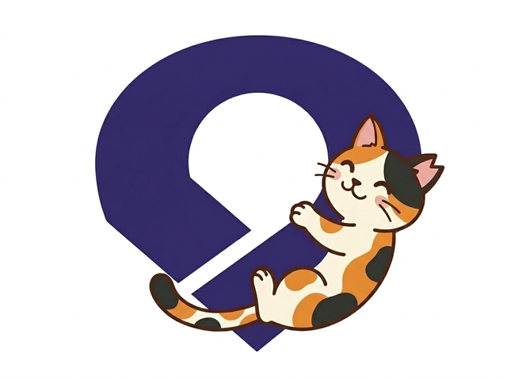

湯浅保健所管内で活動する江川美奈江さんの話
大抵は苦情の連絡が入るところからスタートする。まず現地に出向き、丁寧に聞き取りを行う。
次に「地域猫対策を始める」旨のチラシを作成し、保健所が定めた範囲の家を訪問・ポスティング。区長・班長にも説明し、回覧板にも入れてもらう。
地域全体を巻き込む下地づくりが、活動の成否を左右する。
捕獲を成功させるために、現地の人との連携は絶対に欠かせない。
「捕獲するのに腹いっぱい餌をやられたら困る」
捕獲器を設置したら、基本的に離れない。薄暗くなってから設置して朝まで放置してよいと思っている人も多いが、それは危険だ。
捕獲器を設置したら離れないのが大原則。長時間の放置は絶対にしない。
捕獲器を使う際は、次のような準備が必要になる。
手術翌日は必ず排尿と採食を確認してからリリースするようにしている。
一つひとつの工程を丁寧に踏むことが、猫と地域を守ることにつながる。
なかなか入らない猫には、工夫が必要だ。
「予約していたけれど捕まらなかったときは、早めに病院に連絡を。複数現場を抱えていると、早めのキャンセル連絡で別現場に走ることができる」
現場でよく耳にするのが「不妊手術をすれば終わり」という感覚だ。しかし江川さんはこう話す。
「ウチは手術が終わってから始まるんだと認識しています」
リリース後も定期的に餌やりさん宅を訪問し、人と猫の生存確認、新参猫がいないかの調査を続ける。キャットフードバンクで集まったフードを持参して。
活動の目的は、猫たちがそれまでより安全に命を全うできること。地域美化や近隣関係の維持も、その一部だ。
ただ一方で、最近は餌やりさんの死去や地域猫の看取りも増えており、「TNRだけで終わっていればよかったのか」と自問することもあるという。
不妊手術は終点ではなく、通過点。
地域の人と信頼関係を築き、
猫が安全に生きられる環境を育て続けること。
それが現場の答えだ。